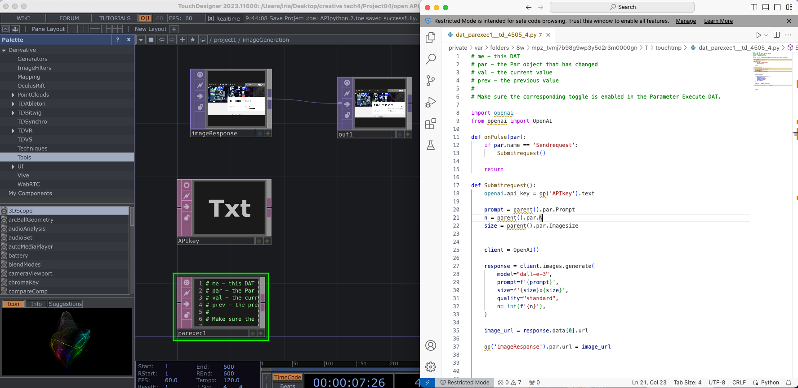
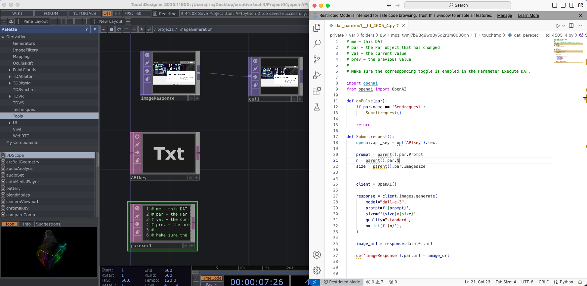

For this project, I did several trials:
I checked the error information, and the reason may be my python installed within Anaconda Navigator.
Then, I transferred to use python directly.
 

https://github.com/yuliniris/creative-tech-4/tree/main/project04.
File name: APIpython.toe
Open API resources:
STOCK_ENDPOINT = "https://www.alphavantage.co/query"
NEWS_ENDPOINT = "https://newsapi.org/v2/everything"
Dates of price data: yesterday and the day before yesterday
Triggers to fetch News API : the price difference percentage is more than 2
https://github.com/yuliniris/creative-tech-4/tree/main/project04.
File name: stockNews.ipynb
It failed, and I have not solved it.

https://github.com/yuliniris/creative-tech-4/tree/main/project04.
File name: stockNews.ipynb
It works.
https://github.com/yuliniris/creative-tech-4/tree/main/project04.
File name: sentiment analysis.ipynb
It involves five steps:
1. Get data from Kaggle API.
2. Preprocessing: initialize tokenizer, extract sentiment column, encode.
3. Build the dataset.
4. Shuffle the data and batch it.
5. Build and train the model.
It failed with the section of building the model.
https://github.com/yuliniris/creative-tech-4/tree/main/project04.
File name: sentiment analysis.ipynb
1. I did several trials to fetch Kaggle API, since at the beginning I did not have the right pathway of Kaggle.json and the dataset is with competition.
2. It shows the compatible issues with TensorFlow, transformer, Keras. I need to update them or install backwards compatible package.
3. As for the errors of building model, it relates to the output part, and I will check community later.